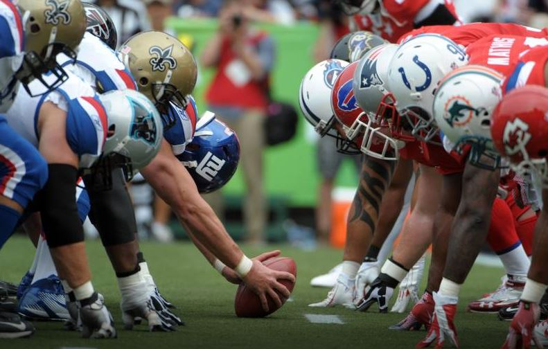
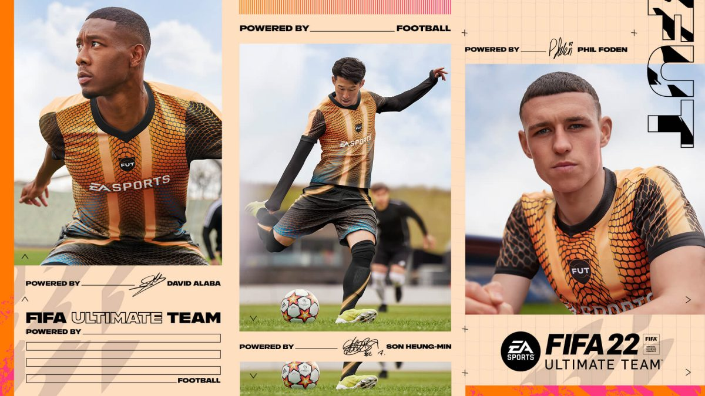

El ultimate team es un modo de juego de fifa en el que puedes hacer tu propio equipo usaqndo
jugadores de la vida real comrando y vendiendolos con las monedas que consigues jugando
Motivación
Escogí este tema porque el FIFA 22 y todos los fifas quer ha habido me han encantado, es un
juego increíble para jugar solo con amigos o como tu prefieras
celebración
top 10 mejores iconos del fifa
25/11/2021
puskas
maldini
vieira
zidane
ronaldo
maldini
garrincha
cruyff
ronaldinho
pele
Este es un top 10 de los mejores iconos que existen en FIFA 22, ya que estos jugadores (
estas cartas) tienen una velocidad, un regate, una agilidad, una defensa, un pase y un tiro
a puerto increible que facilmente son los mejores de todo el juego.
Arts, E. (2021, July 11). FIFA 22 - Juego de futbol oficial de EA SPORTSTM - Sitio
oficial de EA. Electronic Arts Inc. https://www.ea.com/es-mx/games/fifa/fifa-22
Aquí hay unos links para que conozcan más sobre el FIFA 22 y sobre todo lo que contiene y
para que puedan informarce de todas las novedades que sucedad en el juego.
Penal Fifa

Referencias de nfl
16/12/2021
Aquí les dejo un video de algunos increibles goles que se han hecho en FIFA 22
Investigación
25/01/2022
los modos de juego del fifa 22
uno de los diferentes modos de juego es el clubes pro este modo de juego se trata de
hacer un equipo en conjunto de ti y de tus amigos cada quien juega con un jugador o uno
juega
con todos tu decides, este modo es uno de los mas usados por la comunidad ya que es muy
divertido jugar online con tus amigos contra gente online
el modo carrera este modo en mi opinion es uno de los mejores ya que puedes armar tu
equio
con un presupuesto depndiendo el quiopo o con los jugadores que ya estan es muy entretenido
también puedes fichar nuevos jugadores de otros equipos o que estan hechos por el juego con
en
transcurso del año.
el modo patada inicial a esto me refieo al mas normal al modo de juego de cuando entras al
juego
es el juego coo el que vas a poder jugar con equipo s de la vida real contra tus amigos o
jugadoores online, es un juegi en el que la genta suele apostar y así.
y por último pero no menos importante el ultimate team, este modo es el más juado por la
comunidad ya que en el puedes utilizar los jugadores de la vda real para hacer tu propio
euipo
tu puedes jugar partidos y con eso te pueden dar monedas o packs y con las monedas puedes
comprar mejores jugadores y divertirte más.
1
aqui hay una estadistica de quemodos de juego juega mas la gente
ultimete team y sus características
el ultimate team ¿que es? es una modalidad de juego con cartas virtuales que cada uno podras
usarlas dentro del terreno del campo tu manejandolas, cada carta tiene unas caracteristicas
y
estadisticas que pueden usrase para mejorar dentro del juego y ganar más partidos, y
divirtiendote mucho.
las cartas de ultimate, este párrafo habla sobre las cartas que ea sports y fifa meten al
modo de
juego para que haya nuevas cartas no solo con las cartas normales que salen con nuevas
cartas
como por ejemplo las freeze, los totys, los tots, los future stars, etc.
los totys esta es una carta muy importante en las cartas que sacan al año se podría decir que
es
la más esperada por la comunidad ya que esta carta solamente sacan 12 cartas diferentes pero
no
son de cualquier jugador al azar no se trata de los mejores jugadores del año como sus
siglas ls
dicen TOTYteam of the year
Lo bueno de la creación del club del modo carrera de FIFA 22 es que nos permite iniciar
nuestra
andadura en cualquiera de las ligas disponibles en el juego. Podemos empezar en la élite del
fútbol mundial u optar por un inicio más modesto.
2
datos sobre el fifa 22
leonel andres messi es el jugador de mas media de fifa 22 con un total de 93 de media leo es
el
ugador co mas media sobre cristiano ronaldo lewandowski y neymar etc. esto de la media
depende
de que tan buen año hayas tenido en la vida real de fútbol normalmente se varian la mejor
media
entre cristiano ronaldo y messi
en el clubes pro se puede que con tu equipo juegues ligas o toreos ocomo la copa ea o tu
division
ya que cada equipo esta en una division, también si no eres hombre puedes modificar tu
persoaje
para que se amujer y con los tipos de cara y cosas que tiene el modo puedes hacer que tu
personaje se parezca a ti o a alguno de tus famosos preferidos.
cuando en el modo carrera un jugador se retira como por ejemplo ibrahimovic imaginemos que se
retira tu podras fichar a un jugador joven del mismo pais que ibra y de la misma posicion,
en el
modo carrera se puede entrenar para que los jugadores tengan mas soltura y suban de media
mas
rapido.
en el modo de ultimate team hay una zona donde puedes dar plantillas de jugadores y te dan un
buen jugador que te conviene y que tu elijes para tu equipo, ese jugador también puede ser
un
buen pack que te asegura algo bueno esto se llama sbc, puedes hacer un sobre de icono que
vaen
mucho la pena.
3
ultimete team y sus características
el ultimate team ¿que es? es una modalidad de juego con cartas virtuales que cada uno podras
usarlas dentro del terreno del campo tu manejandolas, cada carta tiene unas caracteristicas
y
estadisticas que pueden usrase para mejorar dentro del juego y ganar más partidos, y
divirtiendote mucho.
las cartas de ultimate, este párrafo habla sobre las cartas que ea sports y fifa meten al
modo de
juego para que haya nuevas cartas no solo con las cartas normales que salen con nuevas
cartas
como por ejemplo las freeze, los totys, los tots, los future stars, etc.
los totys esta es una carta muy importante en las cartas que sacan al año se podría decir que
es
la más esperada por la comunidad ya que esta carta solamente sacan 12 cartas diferentes pero
no
son de cualquier jugador al azar no se trata de los mejores jugadores del año como sus
siglas ls
dicen TOTYteam of the year
Lo bueno de la creación del club del modo carrera de FIFA 22 es que nos permite iniciar
nuestra
andadura en cualquiera de las ligas disponibles en el juego. Podemos empezar en la élite del
fútbol mundial u optar por un inicio más modesto.
2
datos sobre el fifa 22
leonel andres messi es el jugador de mas media de fifa 22 con un total de 93 de media leo es
el
ugador co mas media sobre cristiano ronaldo lewandowski y neymar etc. esto de la media
depende
de que tan buen año hayas tenido en la vida real de fútbol normalmente se varian la mejor
media
entre cristiano ronaldo y messi
en el clubes pro se puede que con tu equipo juegues ligas o toreos ocomo la copa ea o tu
division
ya que cada equipo esta en una division, también si no eres hombre puedes modificar tu
persoaje
para que se amujer y con los tipos de cara y cosas que tiene el modo puedes hacer que tu
personaje se parezca a ti o a alguno de tus famosos preferidos.
cuando en el modo carrera un jugador se retira como por ejemplo ibrahimovic imaginemos que se
retira tu podras fichar a un jugador joven del mismo pais que ibra y de la misma posicion,
en el
modo carrera se puede entrenar para que los jugadores tengan mas soltura y suban de media
mas
rapido.
en el modo de ultimate team hay una zona donde puedes dar plantillas de jugadores y te dan un
buen jugador que te conviene y que tu elijes para tu equipo, ese jugador también puede ser
un
buen pack que te asegura algo bueno esto se llama sbc, puedes hacer un sobre de icono que
vaen
mucho la pena.
3

fifa 22
Investigación
25/01/2022
Vídeo sobre el modo carrera de fifa
volta
foden
02/02/22
Vídeo sobre el fifa en general opiniones de la gente
 Ultimate team
Ultimate team
 top 10 mejores iconos del fifa
top 10 mejores iconos del fifa  Referencias FIFA
Referencias FIFA
 Investigación
Investigación 

 clasico español
clasico español